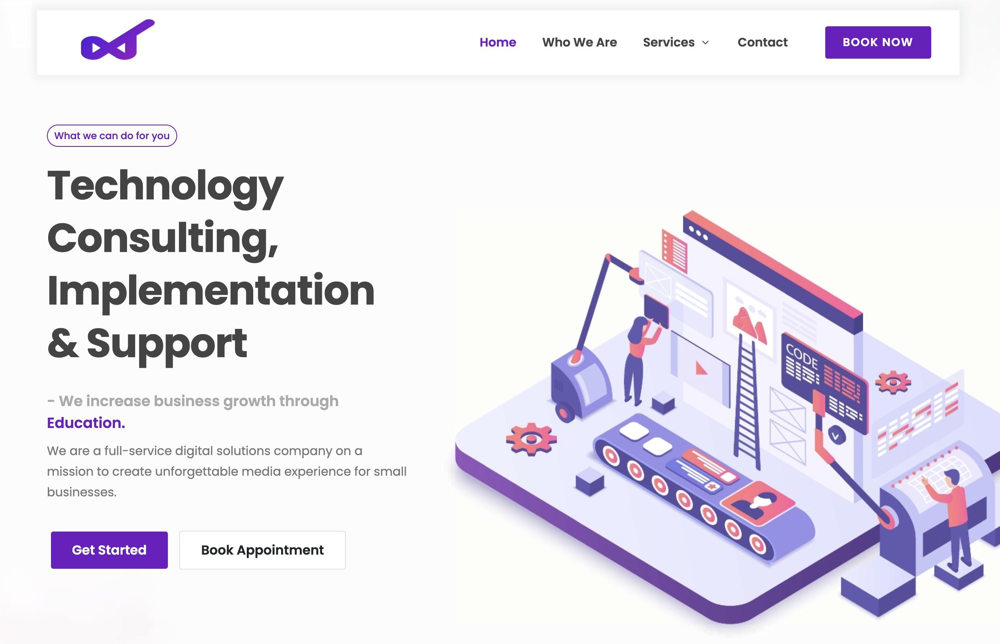

WatuSoft (NDA Protected)
Profile
WATUSOFT Provides a subscription based full scale software and IT solutions:
- Could migrations
- App and Website development
- Software development
- Digital marketing, IT Support
The Background
Goals included:
Evaluating On-boarding flow and product flow - Helping us point out friction points that users encounter when interacting with the interface (evaluate users first-time sign-up experience and interactions with the product)
Usability Inspection Method based Research | website analytics
- Duration - 3 weeks
- Number of evaluators - 6:9
- Number of interviews - Until “Saturation” point is reached or emerging themes are fleshed out.
My role was to conduct User Testing Research/ First -Time user study in form of an Heuristic Analysis + Focus groups + Website analytics software
Methods
Moderated
- Heuristic analysis - Moderated and led 6 expert users to evaluate the usability of the website interface through independent walkthroughs and discussed pain points, with the guidance of heuristic rules
- Focus groups - led a group of 9 participants through a set of questions on a particular topic such as needs and feeling toward the website
- Hotjar - Used Recordings (Full map of user journey, live feedback of iterations, click stream analysis and Heatmaps to dig deeper into UX issues
Unmoderated
Challenges
- “Process pain points”- some key tasks in the conversation funnel could not be completed - “unable to locate the desired item to move it into their cart”
- Click and scroll jails - Users found it hard to navigate and leave the website
Action Plan
Gradual upgrade of the Website
- Heuristic analysis - asked users to perform the key tasks within the conversion funnel (e.g. login, find product X, add product X to cart) - led to a bug fix that hindered the macro events.
- Redesigned and removed unnecessary CTA’s - to avoid cognitive execution or overwhelming the user.
- Optimized the scrolling feature - to make it easier for the user to navigate through the website.
Deliverables
- Moderate Transcripts of the sessions
- Video or audiotapes of the session
- Significant themes that emerged within and between focus groups
- Recordings from Hotjar
Key Take-aways
- It’s OK to put clarity and simplicity over complication and creativity - Increases micro and macro events
- You’re not out to prove anything with your design, your only goal is to help the user while creating a memorable experience in the process - Improving user engagement
- Without usability testing and other forms of conversation research, you’re leaving money on the table - at best you’re making educated guesses about your UX
- If you’re looking to build your brand and a long-term relationship with leads, don’t sacrifice experience to implement something “cool” or to capture an email